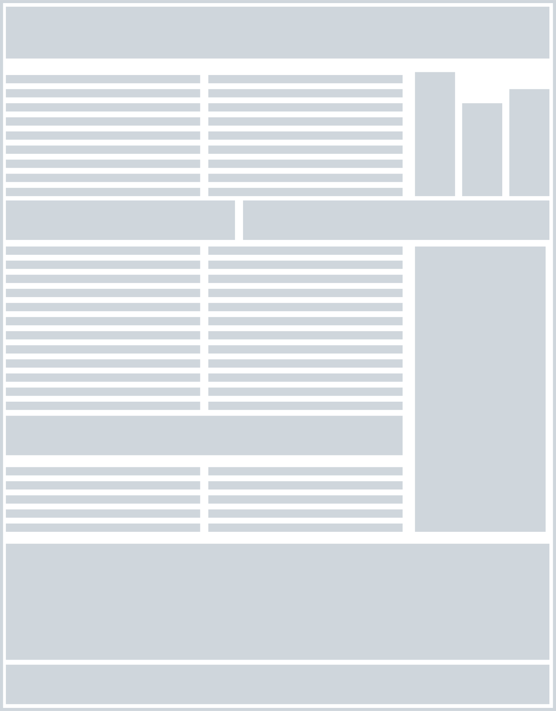
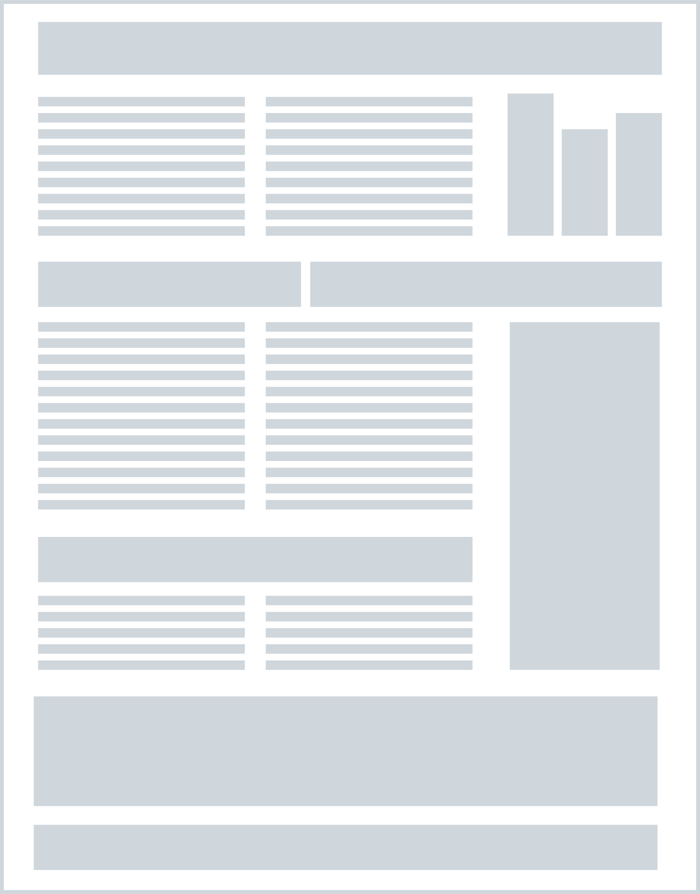

Роль пространства
Формат плаката ограничен. Невозможно уместить в один лист всю информацию об исследовании, не пытайтесь. Силишком большое количество элементов (заголовков, текстов, графиков, изображений) мешает их восприятию. Информации нужен воздух. Негативное пространство, или пустое пространство вокруг элементов, — это не пустота, а инструмент. Оно создаёт естественные «паузы» для глаз, помогая зрителю ориентироваться в информации. Представьте перегруженный текст или график: его сложно воспринимать, и зритель теряет интерес. Негативное пространство, напротив, облегчает восприятие, акцентируя внимание на главном. Оптимальное количество информации на единицу пространства определяется принципом: «чем проще — тем лучше». Слишком много деталей отвлекают, а их нехватка делает плакат скучным.
Соотношение элементов — это основа композиции.
Размеры, пропорции и расстановка акцентов создают визуальный ритм, привлекают внимание к важному и делают информацию понятной. Работа с размерами и масштабами, организует пространство. Это применение принципа иерархии на практике. Самые большие элементы притягивают внимание и задают основную структуру. Мелкие детали поддерживают эту структуру, не доминируя над главным. Пропорции играют ключевую роль в создании акцентов. Если вы хотите, чтобы зритель запомнил определённую часть вашего плаката (например, выводы или ключевую цифру), выделите её с помощью размера.
Помните про пустое воздушное пространство. Симметричная композиция более стабильная, уравновешенная и убедительная. Баланс в композиции — это принцип равновесия, который позволяет распределить элементы на плоскости так, чтобы зритель воспринимал их гармонично и с легкостью. Это не только эстетический аспект, но и функциональный инструмент, который помогает направить внимание аудитории к ключевым элементам, поддерживая структурированность и ясность представленной информации.
Баланс бывает разных видов. Симметричный баланс основывается на зеркальном расположении элементов относительно центральной оси и создаёт ощущение стабильности и порядка, что особенно полезно для строгих и формальных дизайнов. Асимметричный баланс, напротив, требует уравновешивания элементов разного размера, формы или цвета за счёт их визуальной тяжести. Он добавляет композиции динамику и современность. Радиальный баланс строится вокруг центральной точки, формируя единство и сплочённость всех элементов. Контрастный баланс, в свою очередь, использует различия в цвете, размере или текстуре, чтобы выделить важные части композиции, направляя внимание зрителя на ключевые моменты.
 Научный плакат особенно нуждается в сбалансированной композиции. Она помогает правильно организовать пространство, не перегружая его и не оставляя пустых зон. Гармоничный баланс превращает плакат в удобный и понятный инструмент общения, который удерживает внимание и подчёркивает главное.